![Preface and How to use the book information was given
In Preface,This book is developed in a holistic approach which inculcates comprehending and analytical skills.It helps students to understand higher secondary science in abetter way and to prepare for competitive exams in future.this book is designed in a learner centric way.
the informations in how to use the book shows 25 units with simple activities,infographics and info bits,do you know,more to know as an eye opener and glossary ,ICT corner and QR code with digital native generation.
information to get connected to QR code shows steps of download qr code,open the qr code scanner,click the camera closer to qr code in teaxt book click the url appear in screen and go to content page.
How to get connected to QR code Z N Y P S](images/image-2.png)
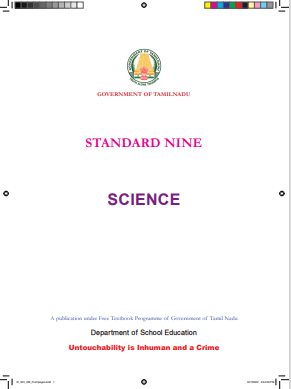
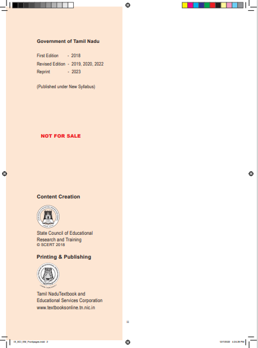
Unit |
Title |
Month |
Unit 1 |
June |
|
Unit 2 |
July |
|
Unit 3 |
August |
|
Unit 4 |
October |
|
Unit 5 |
November |
|
Unit 6 |
December |
|
Unit 7 |
January |
|
Unit 8 |
February |
|
Unit 9 |
March |
|
Unit 10 |
June |
|
Unit 11 |
July |
|
Unit 12 |
August |
|
Unit 13 |
October |
|
Unit 14 |
November |
|
Unit 15 |
January |
|
Unit 16 |
February |
|
Unit 17 |
June |
|
Unit 18 |
July |
|
Unit 19 |
August |
|
Unit 20 |
October |
|
Unit 21 |
November |
|
Unit 22 |
November |
|
Unit 23 |
January |
|
Unit 24 |
February |
|
Unit 25 |
September |
|
|
Practicals |
|
|
Glossary |
|
After completing this lesson, students will be able to
understand the fundamental and derived quantities and their units.
know the rules to be followed while expressing physical quantities in SI units.
get familiar with the usage of scientific notations.
know the characteristics of measuring instruments.
use vernier caliper and screw gauge for small measurements.
find the weight of an object using a spring balance.
know the importance of accurate measurements.
Measurement is the basis of all important scientific study. It plays an important role in our daily life also. While finding your height, buying milk for your family, timing the race completed by your friend and so on, you need to make measurements. Measurement answers questions like, how long, how heavy and how fast question mark Question mark. Measurement is about assigning a number to a characteristic of an object or event which can be compared with other objects or events. It is defined as the determination of the size or magnitude of a quantity. In this lesson you will learn about units of measurements and the characteristics of measuring instruments.
Physical quantity is a quantity that can be measured. Physical quantities can be classified into two: fundamental quantities and derived quantities. Quantities which cannot be expressed in terms of any other physical quantities are called fundamental quantities. Example: Length, mass, time, temperature etc. Quantities which can be expressed in terms of fundamental quantities are called derived quantities. Example: Area, volume, density etc.
Physical quantities have a numerical value and a unit of measurement bracket open say, 3 kilogram bracket closed. Suppose you are buying 3 kilograms of vegetable in a shop. Here, 3 is the numerical value and kilogram is the unit. Let us study about units now.
A unit is a standard quantity with which the unknown quantities are compared. It is defined as a specific magnitude of a physical quantity that has been adopted by law or convention. For example, feet is the unit for measuring length. That means, 10 feet is equal to 10 times the definite pre-determined length, called feet.
Earlier, different unit systems were used by people from different countries. Some of the unit systems followed earlier are given below in Table 1.1.
Table 1.1 Unit systems of earlier times
System |
Length |
Mass |
Time |
CGS |
Centimetre |
gram |
second |
FPS |
foot Star mentioned in the foot |
pound |
second |
MKS |
Metre |
kilogram |
second |
Star mentioned in the foot denotes that foot is the singular of feet
At the end of the Second World War there was a necessity to use worldwide system of measurement. Hence, SI Bracket OPEN International System of Units bracket closed system of units was developed and recommended by General Conference on Weights and Measures at Paris in 1960 for international usage.
S I system of units is the modernised and improved form of the previous system of units. It is accepted in almost all the countries. It is based on a certain set of fundamental units from which derived units are obtained by proper combination. There are seven fundamental units in the SI system of unit.They are also known as base units and they are given in Table 1.2.
The units used to measure the fundamental quantities are called fundamental units and the units which are used to measure the derived quantities are called derived units.
Table 1.2 Fundamental quantities and their units
Fundamental quantities |
Unit |
Symbol |
Length |
metre |
m |
Mass |
kilogram |
kg |
Time |
second |
s |
Temperature |
kelvin |
K |
Electric current |
ampere |
A |
Luminous intensity |
candela |
cd |
Amount of substance |
mole |
mol |
With the help of these seven fundamental units, the units for other derived quantities are obtained and their units are given below in Table 1.3.
Length is the extent of something between two points. The SI unit of length is metre. One metre is the distance travelled by light through vacuum in 1 by 299792458 second.
Table 1.3 Derived quantities and their units
Serial number |
Physical quantity |
Expression |
Unit |
Serial number 1 |
Area |
length into breadth |
m power 2 |
Serial number 2 |
Volume |
area into height |
cubic m |
Serial number 3 |
Density |
mass by volume |
Kg m power minus 3 |
Serial number 4 |
Velocity |
displacement by time |
m s power minus 1 |
Serial number 5 |
Momentum |
mass into velocity |
Kg m s power minus 1 |
Serial number 6 |
Acceleration |
velocity by time |
m s power minus 2 |
Serial number 7 |
Force |
mass into acceleration |
Kg m s power minus 2 or N |
Serial number 8 |
Pressure |
force by area |
N m power minus 2 or Pa |
Serial number 9 |
Energy Bracket OPEN work bracket closed |
force into distance |
N m or J |
Serial number 10 |
Surface tension |
force by length |
N m power minus 1 |
In order to measure very large distance Bracket OPEN distance of astronomical objects bracket closed we use the following units.
Astronomical unit
Light year
Parsec
Astronomical unit bracket open A U bracket closed: It is the mean distance of the centre of the Sun from the centre of the Earth. 1 A U = 1.496 into 10 power 11 m Bracket OPEN Figure 1.1 bracket closed Astronomical unit was given below
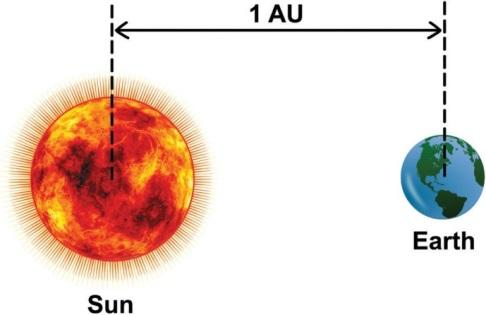
Figure 1.1 Astronomical unit
Light year: It is the distance travelled by light in one year in vacuum and it is equal to9.46 into 10 power 15 m.
Parsec: Parsec is the unit of distance used to measure astronomical objects outside the solar system.
1 Parsec = 3.26 light year.
Table 1.4 Larger units
Larger units |
In metre |
Kilometre Bracket OPEN km bracket closed |
10 power 3 m |
Astronomical unit Bracket OPEN A U bracket closed |
1.496 into 10 power 11 m |
Light year Bracket OPEN ly bracket closed |
9.46 into 10 power 15 m |
Parsec Bracket OPEN pc bracket closed |
3.08 into 10 power 16 m |
Box item open
The nearest star alpha centauri is about 1.34 parsec from the sun. Most of the stars visible to the unaided eye in the night sky are within 500 parsec distance from the sun.Box item ends
To measure small distances such as distance between two atoms in a molecule, size of the nucleus and wavelength etc. we use submultiples of ten. These quantities are measured in Angstrom unit Bracket OPEN Table 1.5bracket closed.
Table 1.5 Smaller units
Smaller units |
In metre |
Fermi bracket open Bracket OPEN f bracket closed Star mentioned in the outside of bracket |
10 power minus 15 m |
Angstrom bracket open Bracket OPEN A° bracket closed bracket closed Star mentioned in the outside of bracket |
10 power minus 10 m |
Nanometre bracket open Bracket OPEN nm bracket closed bracket closed |
10 power minus 9 m |
Micron bracket open Bracket OPEN micrometre micro m bracket closed |
10 power minus 6 m |
Millimetre bracket open Bracket OPEN mm bracket closed |
10 power minus 3 m |
Centimetre bracket open Bracket OPEN cm |
10 power minus 2 m |
Star mentioned represents the Unit outside SI system and still accepted for use.
Mass is the quantity of matter contained in a body. The SI unit of mass is kilogram bracket open kg bracket closed . One kilogram is the mass of a particular international prototype cylinder made of platinum-iridium alloy, kept at the International Bureau of Weights and Measures at Sevres, France.
The units gram bracket open g bracket closed and milligram bracket open Bracket OPEN mg bracket closed are the submultiples of ten bracket open 1 / 10bracket closed of the unit kg. Similarly quintal and metric tonne are multiples of ten bracket open into 10 bracket closed of the unit kg.
1 g = 1 by 1000 into 1 kg = 0.001 kg
1 mg = 1 by 1000000 into 1 kg = 0.000001 kg
1 quintal = 100 into 1 kg = 100 kg
1 metric tonne = 1000 into 1 kg = 10 quintal
Mass of a proton, neutron and electron can be determined using atomic mass unit bracket open a m u bracket closed.
1 a m u = bracket open 1 by 12thbracket closed of the mass of C12 atom.
Box item open
Mass of 1 ml of water = 1 g
Mass of 1 l of water = 1 kg
Mass of the other liquids vary with their density.
box item ends
Time is a measure of duration of events and the intervals between them. The SI unit of time is second. One second is the time required for the light to propagate 299792458 metres through vacuum. It is also defined as 1/86, 400th part of a mean solar day. Larger units for measuring time are day, month, year and millennium etc. 1 millenium = 3.16 into 10 power 9 s.
Temperature is the measure of hotness or coldness of a body. SI unit of temperature is kelvin bracket open K bracket closed.One kelvin is the fraction bracket open 1 by 273.16 bracket closed of the thermodynamic temperature of the triple point of water bracket open The temperature at which saturated water vapour, pure water and melting ice are in equilibrium bracket closed. Zero kelvin bracket open 0 K bracket closed. is commonly known as absolute zero. The other units for measuring temperature are degree celsius bracket open C bracket closed and fahrenheit bracket open F bracket closed.
Unit prefixes are the symbols placed before the symbol of a unit to specify the order of magnitude of the quantity. They are useful to express very large and very small quantities. k bracket open kilo bracket closed is the unit prefix in the unit, kilometer. A unit prefix stands for a specific positive or negative power of 10. Some unit prefixes are given in Table 1.6.
Table 1.6 Unit prefixes
Power of 10 |
Prefix |
Symbol |
10 power 15 |
peta |
P |
10 power 12 |
tera |
T |
10 power 9 |
giga |
G |
10 power 6 |
mega |
M |
10 power 3 |
kilo |
k |
10 power 2 |
hecto |
h |
10 power 1 |
deca |
da |
10 power minus 1 |
deci |
d |
10 power minus 2 |
centi |
c |
10 power minus 3 |
milli |
m |
10 power minus 6 |
micro |
mew |
10 power minus 9 |
nano |
n |
10 power minus 12 |
pico |
p |
10 power minus 15 |
femto |
f |
The physical quantities vary in different proportion like from 10 power minus 15 m being the diameter of nucleus to 10 power 26 m being the distance between two stars and 9.11 into 10 power minus 31 kg being the mass of electron to 2.2 into 10 power 41 kg being the mass of the milky way galaxy.
1. The units named after scientists are not written with a capital initial letter.
Example newton, henry, ampere and watt.
2. The symbols of the units named after scientists should be written by the initial capital letter. Example N for newton, H for henry, A for ampere and W for watt.
3. Small letters are used as symbols for units not derived from a proper noun. Example m for metre, kg for kilogram.
4. No full stop or other punctuation marks should be used within or at the end of symbols. Example 50 m and not as 50 m dot
5. The symbols of the units are not expressed in plural form. Example 10 kg not as 10 kgs.
6. When temperature is expressed in kelvin, the degree sign is omitted. Example 283 K not as 283 degree K bracket open If expressed in celsius scale, degree sign should be included. Example 100 degree C not as 100 C, 108 degree F not as 108 F bracket closed.
7. Use of solidus bracket open /bracket closed is recommended for indicating a division of one unit symbol by another unit symbol. Not more than one solidus is used. Example m s power minus 1 or m/s. J/K/mol should be JK power minus 1 mol power minus 1.
8. The number and units should be separated by a space. Example 15 kg m s power minus 1 not as 15 kg m s power minus 1.
9. Accepted symbols alone should be used. Example ampere should not be written as amp and second should not be written as sec
10. The numerical values of physical quantities should be written in scientific form. Example the density of mercury should be written as 1.36 into 10 power 4 kg m power minus 3 not as 13600 kg m power minus 3.
In our daily life, we use metre scale for measuring lengths. They are calibrated in cm and mm. The smallest length which can be measured by metre scale is called least count. Usually the least count of a scale is 1 mm. We can measure the length of objects upto 1 mm accuracy with this scale. By using vernier caliper we can have an accuracy of 0.1 mm and with screw gauge we can have an accuracy of 0.01 mm.
The Vernier caliper consists of a thin long steel scale graduated in cm and mm called main scale. To the left end of the main scale an upper and a lower jaw are fixed perpendicular to the bar. These are named as fixed jaws. To the right of the fixed jaws, a slider with an upper and a lower moveable jaw is fixed. The slider can be moved or fixed to any position using a screw. The Vernier scale is marked on the slider and it moves along with the movable jaws and the slider. The lower jaws are used to measure the external dimensions and the upper jaws are used to measure the internal dimensions of the objects. The thin bar attached to the right side of the Vernier scale is used to measure the depth of hollow objects.
Figure 1.2 Vernier Caliper image was given below
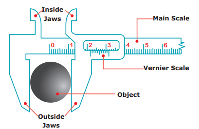
The first step in using the Vernier caliper is to find out its least count, range and zero error.
Least count of the instrument bracket open LC bracket closed = value of one main scale division by Total number of vernier scale division
The main scale division will be in centimeter, further divided into millimetre. The value of the smallest main scale division is 1 mm. In the Vernier scale there will be 10 divisions.
Least count bracket open LC bracket closed = 1 mm /10 = 0.1 mm = 0.01 cm
Unscrew the slider and move it to the left, such that both the jaws touch each other. Check whether the zero marking of the main scale coincides with that of the zero of the vernier scale. If they coincide then there is no zero error. If they do not coincide with each other, the instrument is said to possess zero error. Zero error may be positive or negative. If the zero of a vernier is shifted to the right of main scale, it is called positive error. On the other hand, if the zero of the vernier is shifted to the left of the zero of main scale, then the error is negative.
Figure 1.3 shows the positive zero error. From the figure you can see that zero of the vernier scale is shifted to the right of the zero of the main scale. In this case the reading will be more than the actual reading. Hence, this error should be corrected. In order to correct this error, find out which vernier division is coinciding with any of the main scale divisions. Here, fifth vernier division is coinciding with a main scale division.
So, positive zero error = plus 5 into LC = plus 5 into 0.01 = 0.05 cm and the zero correction is negative. Hence, zero correction is minus 0.05 cm.
Figure 1.3 Positive zero error image was given below
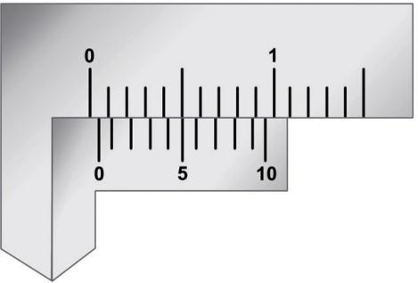
Box item open
Calculate the correct reading, if the main scale reading is 8 cm, vernier coincidence is 4 and positive zero error is 0.05 cm.
Solution:
Correct reading = 8 cm plus bracket open 4 × 0.01 cm bracket closed minus 0.05 cm = 8 plus 0.04 minus 0.05
= 8 minus 0.01 = 7.99 cm
box item ends
Negative zero error
Now look at the Figure 1.4. You can see that the zero of the vernier scale is shifted to the left of the zero of the main scale. So, the obtained reading will be less than the actual reading. To correct this error we should first find which vernier division is coinciding with any of the main scale divisions, as we found in the previous case. In this case, you can see that sixth line is coinciding. To find the negative error, we can count backward Bracket OPENfrom 10bracket closed. Here, the fourth line is coinciding. Therefore, negative zero error = minus 4 into LC = minus 4 × 0.01 = minus 0.04 cm. Then zero correction is positive. Hence, zero correction is plus 0.04 cm.
Figure 1.4 Negative zero error image was given below
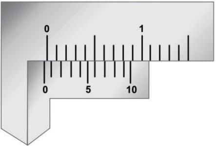
Box item open
The main scale reading is 8 cm and vernier coincidence is 4 and negative zero error is 0.02 cm. Then calculate the correct reading:
Solution:
Correct reading = 8 cm plus Bracket OPEN 4 into 0.01 cm bracket closed plus bracket open 0.02 cm bracket closed
= 8 plus 0.04 plus 0.02 = 8.06 cm. box item ends
We can use Vernier caliper to find different dimensions of any familiar object. If the length, width and height of the object can be measured, volume can be calculated. For example, if we could measure the inner diameter of a beaker bracket open using appropriate jaws bracket closed as well as its depth bracket open using the depth probe bracket closed we can calculate its inner volume
Box item open
Using Vernier caliper find the outer diameter of your pen cap.
box item ends
We are living in a digital world and the digital version of the vernier callipers are available nowadays. Digital Vernier caliper Bracket OPEN Figure 1.5bracket closed has a digital display on the slider, which calculates and displays the measured value. The user need not manually calculate the least count, zero error etc.
Figure 1.5 Digital Vernier caliper image was given below
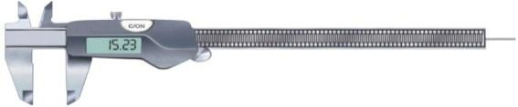
Screw gauge is an instrument that can measure the dimensions up to 1 by 100 of a millimetre or 0.01 mm. With the screw gauge it is possible to measure the diameter of a thin wire and thickness of thin metallic plates.
The screw gauge consists of a U shaped metal frame. A hollow cylinder is attached to one end of the frame. Grooves are cut on the inner surface of the cylinder through which a screw passes Bracket OPEN Figure 1.6bracket closed. On the cylinder parallel to the axis of the screw there is a scale which is graduated in millimetre. It is called Pitch Scale bracket open PS bracket closed. One end of the screw is attached to a sleeve. The head of the sleeve bracket open Thimble bracket closed is divided into 100 divisions and it is called the Head scale.
Figure 1.6 Screw gauge image was given below
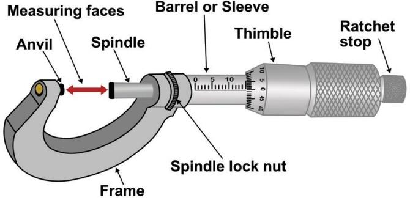
The end of the screw has a plane surface bracket open Spindle bracket closed.A stud bracket open Anvil bracket closed is attached to the other end of the frame, just opposite to the tip of the screw. The screw head is provided with a ratchat arrangement Bracket OPEN safety device bracket closed to prevent the user from exerting undue pressure.
The screw gauge works on the principal that when a screw rotates in a nut, the distance moved by the tip of the screw is directly proportional to the number of rotations.
The pitch of the screw is the distance moved by the tip of the screw for one complete rotation of the head. It is equal to 1 mm in typical screw gauges.
Pitch of the screw = Distance moved by the Pitch divided by number of rotations by head scale
The distance moved by the tip of the screw for a rotation of one division on the head scale is called the least count of the screw gauge.
Least count of the instrument bracket open L.C.bracket closed = value of one smallest pitch scale reading divided by Total number of head scale division
LC = 1 by 100 = 0.01 mm
When the movable stud of the screw and the opposite fixed stud on the frame area brought into contact, if the zero of the head scale coincides with the pitch scale axis there is no zero error
When the movable stud of the screw and the opposite fixed stud on the frame are brought into contact, if the zero of the head scale lies below the pitch scale axis, the zero error is positive bracket open Figure 1.7bracket closed . Here, the 5th division of the head scale coincides with the pitch scale axis. Then the zero error is positive and is given by,
Z.E. = plus bracket open Bracket OPEN n into LC bracket closed where ‘n’ is the head scale coincidence. In this case, Zero error
= plus bracket open 5 into 0.01bracket closed = 0.05mm. So the zero correction is minus 0.05 mm.
Figure 1.7 Positive Zero Error Image was given below
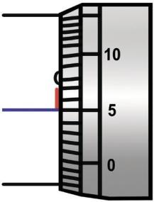
When the plane surface of the screw and the opposite plane stud on the frame are brought into contact, if the zero of the head scale lies above the pitch scale axis, the zero error is negative bracket open Figure 1.8bracket closed Here, the 95th division coincides with the pitch scale axis. Then the zero error is negative and is given by,
ZE = minus bracket open 100 minus n bracket closed into LC
ZE = minus bracket open 100 minus 95bracket closed into LC
= minus 5 into 0.01
= minus 0.05 mm
The zero correction is plus 0.05 mm
Figure 1.8 Negative Zero Error image was given below
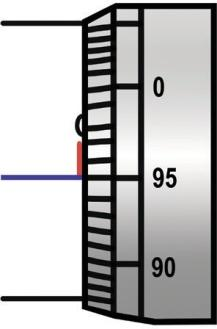
Box item open
Determine the thickness of a single sheet of your science textbook with the help of a Screw gauge. . box item ends
We commonly use the term ‘weight’ which is actually the ‘mass’. Many things are measured in terms of ‘mass’ in the commercial world. The SI unit of mass is kilogram bracket open kg bracket closed. In any case, the units are based on the items purchased. For example, we buy gold in gram or milligram, medicines in milligram, provisions in gram and kilogram and express cargo in tonnes.
Can we use the same instrument for measuring the above listed items question mark Different measuring devices have to be used for items of smaller and larger masses. In this section we will study about some of the instruments used for measuring mass.
Box item open
DO YOU KNOW
The shell of an egg is 12 percent of its mass. A blue whale can weigh as much as 30 elephants and it is as long as 3 large tour buses. box item ends
A beam balance compares the sample mass with a standard reference mass bracket open Standard reference masses are 5 gram , 10 gram, 20 gram, 50 gram, 100 gram, 200 gram, 500 gram, 1kg, 2kg, 5kg bracket closed This balance can measure mass accurately up to 5 gram bracket open Figure 1.9 bracket closed .
Figure 1.9 Common beam balance image was described below
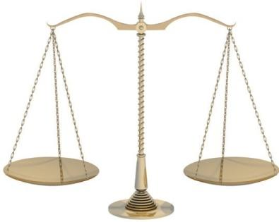
This balance is used in labs and is similar to the beam balance but it is a lot more sensitive and can measure mass of an object correct to a milligram bracket open Figure 1.10 bracket closed.
The standard reference masses used in this physical balance are 10 mg, 20 mg, 50 mg, 100 mg, 200 mg, 500 mg, 1 gram, 2 gram, 5 gram, 10 gram, 20 gram, 50 gram, 100 gram, and 200 gram.
Figure 1.10 Physical balance image was given below
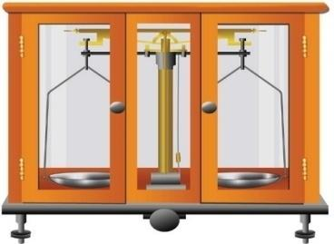
Nowadays, for accurate measurements digital balances are used, which measure mass accurately even up to a few milligrams, the least value being 10 mg Bracket open Figure 1.11bracket closed. This electrical device is easy to handle and commonly used in jewellery shops and labs.
Figure 1.11 Digital balance image was given below
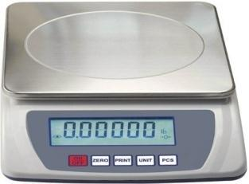
Box item open
With the resources such as paper plates tea cups thread and sticks available at home make a model of an ordinary balance. Using standard masses find the mass of some objects box item ends
This balance helps us to find the weight of an object. It consists of a spring fixed at one end and a hook attached to a rod at the other end. It works by ‘Hooke’s law’ which states that the addition of weight produces a proportional increase in the length of the spring bracket open Figure 1.12 bracket closed. A pointer attached to the rod which slides over a graduated scale on the right. The spring extends according to the weight attached to the hook and the pointer reads the weight of the object on the scale.
Figure 1.12 Spring balance image was given below
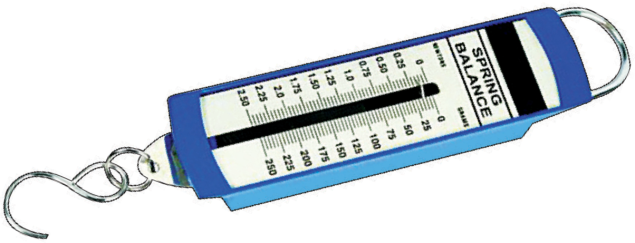
Mass Bracket open m bracket closed is the quantity of matter contained in a body. Weight Bracket open w Bracket closed is the normal force Bracket open N Bracket closed exerted by the surface on the body to balance against gravitational pull on the object. In the case of spring scale, the tension in the spring balances the gravitational pull on the object. When a man is standing on the surface of the earth or floor, the surface exerts a normal force on the body which is equivalent to gravitational force. The gravitational force acting on the object is given by ‘mg’. Here, m is mass of the object and ‘g’ is acceleration due to gravity.
Box item open
If a man has a mass 50 kg on the earth, then what is his weight Question mark
Solution:
Weight bracket open w bracket closed = mg
Mass of a man = 50 kg
His weight = 50 into 9.8
w = 490 newton box item closed
The pull of gravity on the Moon is 1by 6 times weaker than that on the Earth. This causes the weight of the object on the Moon to be less than that on the Earth by six times. Acceleration due to gravity on the Moon = 1.63 m s power minus 2
If the mass of a man is 70 kg then his weight on the Earth is 686 N and on the Moon is 114 N. But his mass is still 70 kg on the Moon.
Mass |
Weight |
1. It is a fundamental quantity. |
It is a derived quantity. |
2. It has magnitude alone – scalar quantity. |
It has magnitude and direction–vector quantity. |
3. It is the amount of matter contained in a body. |
It is the normal force exerted by the surface on the object against gravitational pull. |
4. Remains the same everywhere. |
Varies from place to place. |
5. It is measured using physical balance. |
It is measured using spring balance. |
6. Its unit is kilogram. |
Its unit is newton. |
When measuring physical quantities, accuracy is important. Accuracy represents how close a measurement comes to a true value. Accuracy in measurement is center in engineering, physics and all branches of science. It is also important in our daily life. You might have seen in jewellery shops how accurately they measure gold. What will happen if little more salt is added to food while cooking question mark So, it is important to be accurate when taking measurements.
Faulty instruments and human error can lead to inaccurate values. In order to get accurate values of measurement, it is always important to check the correctness of the measuring instruments. Also, repeating the measurement and getting the average value can correct the errors and give us accurate value of the measured quantity.
Quantities which cannot be expressed in terms of any other physical quantities are called fundamental quantities. Example: Length, mass, time, temperature etc.
Quantities which can be expressed in terms of fundamental quantities are called derived quantities. Example: Area, volume and density etc.
A unit is the fundamental quantity with which unknown quantities are compared.
Length, mass, time, temperature, electric current, intensity and mole are the fundamental units in SI system.
To find the length or thickness of smaller dimensions Vernier caliper and Screw gauge are used.
Austronomical unit is the mean distance of the Sun from the center of the Earth.
1 A U = 1.496 into 10 power 11 m.
Light year is the distance travelled by light in one year in vacuum.
1 Light year = 9.46 into 10 power 15 m.
Parsec is the unit of distance used to measure astronomical objects outside the solar system.
1 Angstrom Bracket OPEN A degree bracket closed = 10 power minus 10 m.
SI Unit of volume is cubic metre or cubic m. Generally, volume is represented in litre Bracket open l bracket closed.
1 ml = 1 cubic cm
Least count of screw gauge is 0.01 mm. Lease count of Vernier caliper is 0.01 cm.
Common balance can measure mass accurately upto 5 g.
Accuracy of physical balance is 10 mg.
GLOSSARY
Metre bracket open m bracket closed Distance light travels, in a vacuum, in 1 by 299792458 part of a second.
Kilogram bracket open kg bracket closed Mass of an international prototype in the form of a platinum-iridium cylinder kept at Sevres in France.
Second bracket open s bracket closed Length of time taken for 9192631770 periods of vibration of the Caesium-133 atom to occur.
Ampere bracket open A bracket closed It is that current which produces a specified force between two parallel wires which are 1 metre apart in a vacuum.
Kelvin bracket open K bracket closed It is 1 by 273. 16th of the thermodynamic temperature of the triple point of water.
Mole bracket open mol bracket closed Amount of the substance that contains as many elementary units as there are atoms in 0.012 kg of carbon-12.
Candela bracket open cd bracket closed Intensity of a source of light of a specified frequency, which gives a specified amount of power in a given direction.